Augustin Delaporte
Commerce Guys
Paris | London | Ann Arbor, MI
Editeur de Drupal Commerce
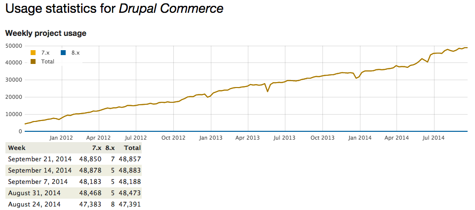Editeur de Commerce Kickstart
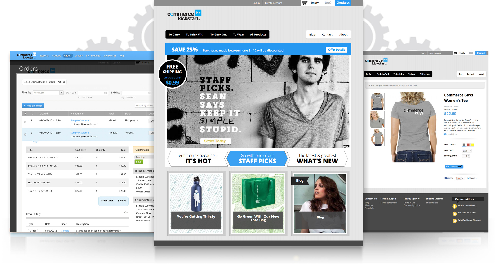Créateur de Platform.sh
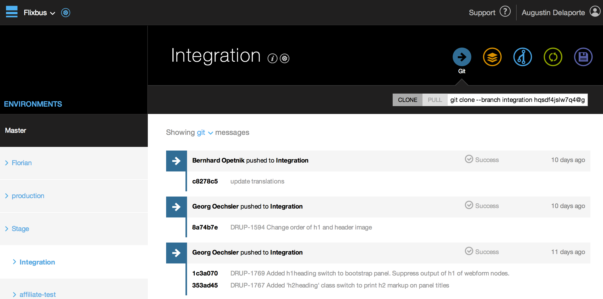Mon experience
- Développement à la Chinoise
- Drupal & Drupal Commerce
- Commerce Kickstart v2
- Platform.sh
- Couple de 8
Tout est question d'outils et de techniques
Les Outils
Controle de version
Faciliter les retours en arrière
Permettre le travail collaboratif
Git
Rapidité et efficacité
Intégrité des données et transaction atomique
Création de branches
Staging area
Code review
Auditer des parties spécifiques du code
Identifier les problèmes qui peuvent survenir
Github
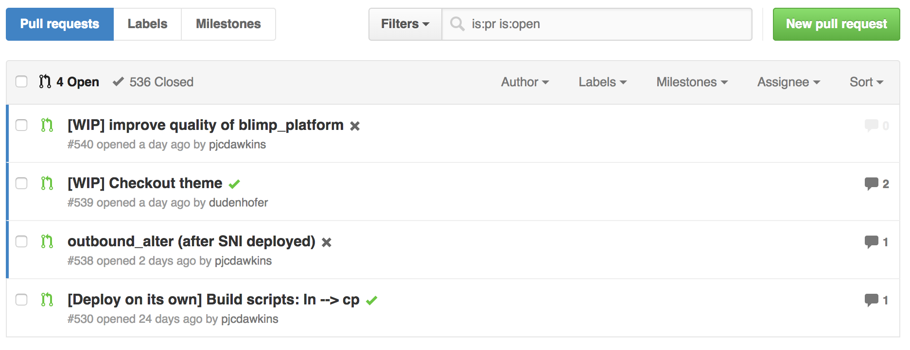Drush
Drupal without Drush is like life without mobile phones... you know you managed just fine but now you just can't imagine how
Drush
- Connection à MySQL: drush sql cli
- Installation du site: drush si
- Lancer le cron: drush cron
- Lancer les mises à jour de base de données: drush updatedb
- Revert ou mettre à jour les features: drush fra
- Lancer les migrations: drush mi
- ...
Modules de développement
- Devel
- Drupal for firebug
- Coder
- XDebug
Tests automatisés
- Simpletest
- Behat/Mink
- Selenium
Tests de montée en charge
- JMeter
- Apache Bench
- WRK
WRK
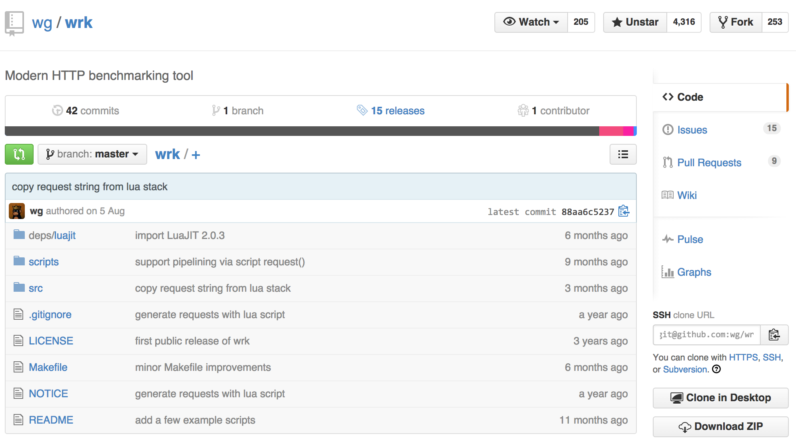Connaitre l'écosystème existant
- Commerce License / License Billing
- OpenID Connect / OpenID Connect SSO
- ...
Et maintenant?
Les Techniques
Plan d'architecture
Think hard before clicking
Environments de développement
Tester dans des conditions réélles et en isolation
Fichier .make
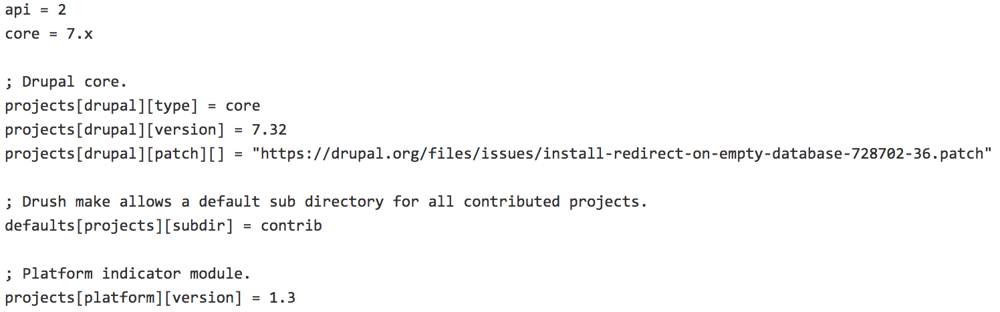Terminé les patchs affectés de façon aléatoire
Profil d'installation
Repartir de 0 à chaque instant
Whaaaat?
Votre profil
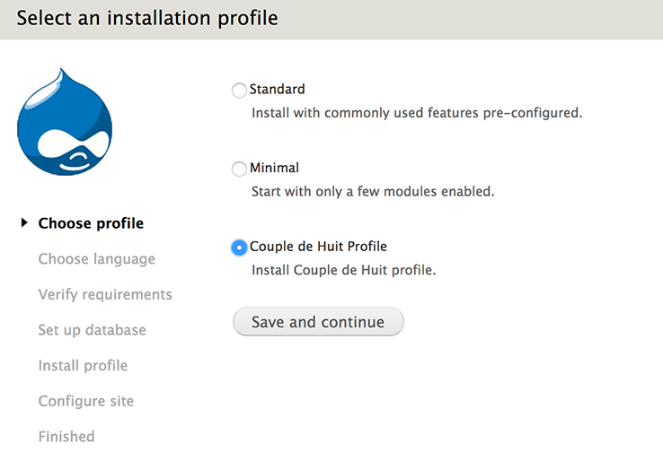Besoin d'un point de départ?
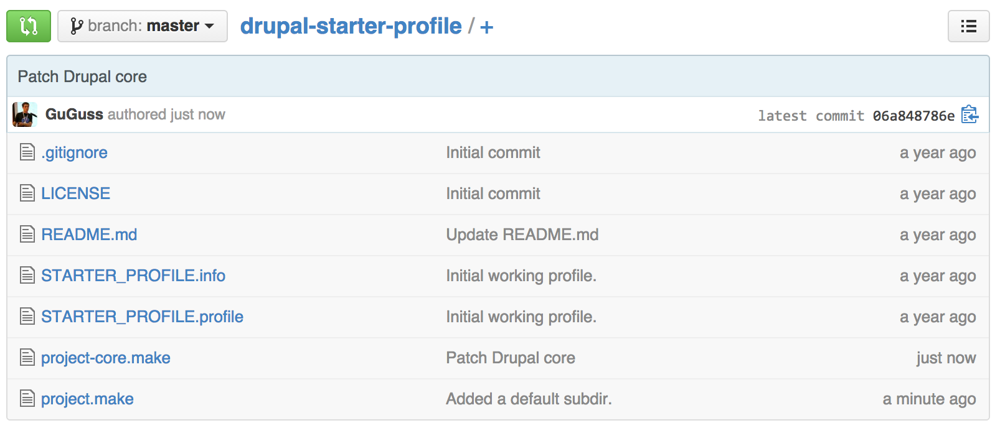Configuration ==> fichiers
Features
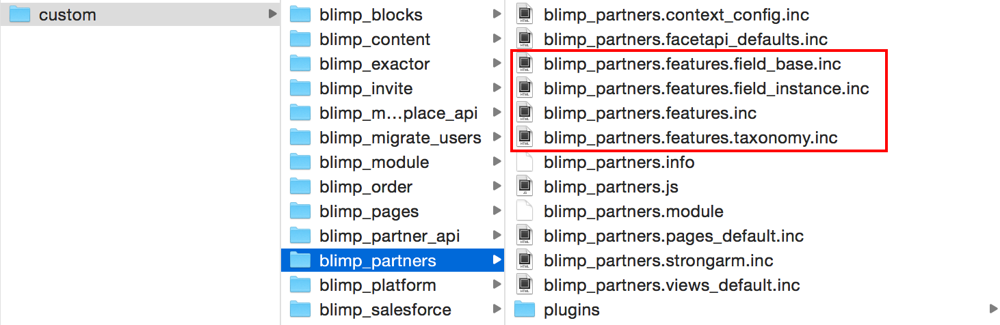drush feature-revert
Migrate
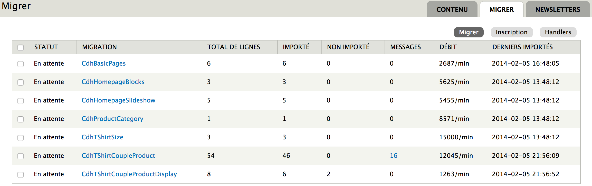drush migrate-import
Un exemple
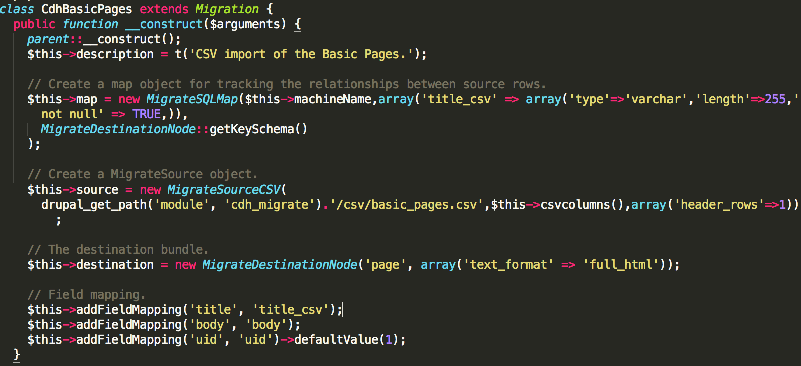Mises à jour
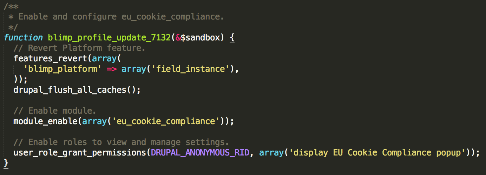drush updatedb
Et en pratique?
Hier
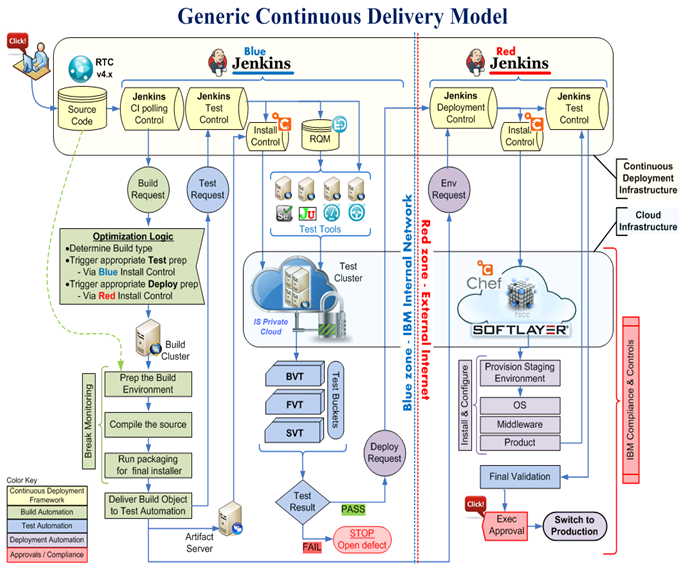build.sh
#!/bin/bash
set -xe
if [ ! -d marketplace/.git ]; then
git clone git@github.com:commerceguys/marketplace.git
fi
# Go to Marketplace to run backups.
run-on-host marketplace_prod@marketplace.commerceguys.com << "END"
# Backup files and database (just in case).
export DIRDATE=`date '+%Y-%m-%d---%H-%M-%S'`
export BACKUPDIR=$HOME/jenkins-backups/marketplace-$DIRDATE
mkdir -p $BACKUPDIR
cp -RL www $BACKUPDIR/www
cd www
drush sql-dump > $BACKUPDIR/marketplace-$DIRDATE.sql
# End of backup script.
END
cd marketplace
# Fetch the new commits and checkout.
git fetch
git reset "origin/master" --hard
cd ..
# Copy to marketplace
rsync -a --delete marketplace/ marketplace_prod@marketplace.commerceguys.com:blimp
run-on-host marketplace_prod@marketplace.commerceguys.com << "EOF"
#!/bin/bash
set -xe
# Maintenance mode
unlink live
ln -s marketplace-maintenance live
sudo /etc/init.d/php5-fpm restart
cd www
drush vset maintenance_mode 1
# Stop the Advanced Queue daemon.
sudo sv stop advqueue-marketplace
# Build website.
cd ../blimp
export BUILD_ROOT=".."
chmod 755 ../www/sites/default
./scripts/build
cd ../www
# Remove all .txt files
find . -name "*.txt" | xargs rm
# Rebuild registry
drush -y rr --no-cache-clear
# Update database.
drush -y updatedb --uri=https://marketplace.commerceguys.com
# Clear drush caches.
drush cc drush
# Clear all caches.
drush cc all
# Revert features.
drush -y fra
# Rebuild indexes.
drush -y sapi-c
drush -y sapi-i productdisplay 0
drush -y sapi-i licenses 0
drush -y sapi-i delivery_partner 0
# Go live.
drush vset maintenance_mode 0
sudo sv start advqueue-marketplace
cd
unlink live
ln -s www live
sudo /etc/init.d/php5-fpm restart
EOF
Aujourd'hui
Prenez un coupon et vivez l'expérience
Les inconvénients
Temps de développement allongés
Les bénéfices
Prédire les processus de développement
Réutiliser des composants à travers plusieurs projets
Optimiser les changements de configurations
Améliorer l'intégration avec des outils de tests automatisés
Débat
Quand suivre ces bonnes pratiques?
Drupal impose-t'il ces bonnes pratiques?
Quels facteurs définissent l'usage de ces bonnes pratiques?